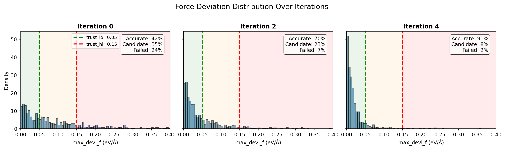
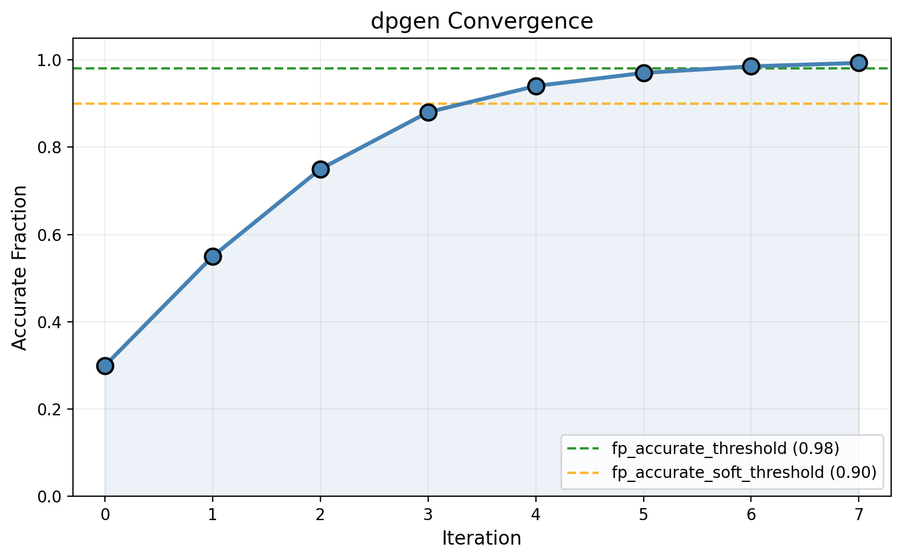
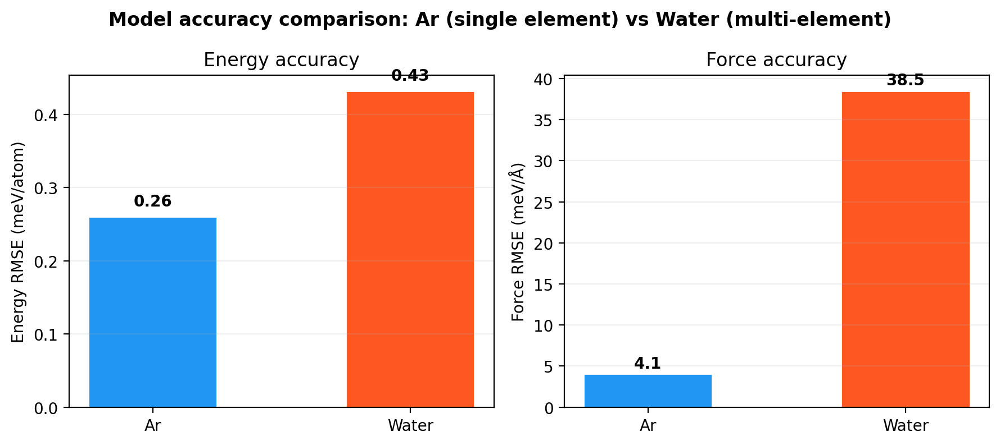

Ch 10: Monitoring & Troubleshooting#
You launched dpgen. The terminal says it’s running. You close your laptop, go get coffee, check back in two hours.
Everything is on fire.
Training completed. Exploration ran. But 40 out of 50 DFT jobs failed because mixing_beta was too aggressive for those candidate geometries. The model deviation plot looks like a seismograph. And there’s a cryptic Python traceback in dpgen.log that mentions something about a “key error” 200 lines deep.
That was iteration 1 of my learning curve. This chapter exists so it’s not yours.
Reading model_devi.out: Your Dashboard#
After Stage 2 (exploration) of each iteration, dpgen produces a file called model_devi.out in every LAMMPS task directory. I stared at this file for twenty minutes the first time before I understood what I was looking at. Then it clicked. This file is the single most important diagnostic in your entire dpgen run. If param.json is the brain and machine.json is the body, model_devi.out is the blood test. It tells you if the patient is healthy or dying.
You’ll find it at paths like:
iter.000000/01.model_devi/task.000.000000/model_devi.out
iter.000000/01.model_devi/task.000.000001/model_devi.out
iter.000000/01.model_devi/task.001.000000/model_devi.out
...
Each file corresponds to one LAMMPS simulation (one system at one temperature). Open that file. I’ll wait.
# step max_devi_e min_devi_e avg_devi_e max_devi_f min_devi_f avg_devi_f
100 2.451928e-03 1.223964e-04 9.876543e-04 8.234567e-02 3.456789e-03 2.345678e-02
200 3.567890e-03 2.345678e-04 1.234567e-03 1.567890e-01 5.678901e-03 4.567890e-02
300 1.234567e-03 8.901234e-05 5.678901e-04 3.456789e-02 1.234567e-03 1.234567e-02
Seven columns. Here’s what each one measures:
Column |
Index (0-based) |
Name |
What it measures |
|---|---|---|---|
1 |
0 |
|
MD timestep number |
2 |
1 |
|
Maximum energy deviation per atom across model pairs (eV/atom) |
3 |
2 |
|
Minimum energy deviation per atom across model pairs |
4 |
3 |
|
Average energy deviation per atom |
5 |
4 |
|
Maximum force deviation across all atoms and model pairs (eV/A) |
6 |
5 |
|
Minimum force deviation |
7 |
6 |
|
Average force deviation |
And I know what you’re thinking. “Which column do I actually care about?”
Column 5. max_devi_f. Index 4 (0-based). That one. Just that one.
Key Insight
max_devi_f is the maximum force deviation among all atoms in the frame, across all pairs of the 4 models. It captures the worst-case disagreement. If even one atom out of 96 has wildly different predicted forces across models, this number is large. One confused atom flags the whole frame. This is conservative by design. And that conservatism is why it works.
Energy deviations (max_devi_e) are per-atom and tend to be much smaller in magnitude. Useful for sanity checks, but the force deviation is what dpgen uses for the three-bucket sorting.
Why forces and not energies? A system with 96 atoms has 1 energy value but 288 force components. Forces carry far more information about the potential energy surface. And the maximum force deviation catches the atom that’s most confused. Even if 95 atoms are completely fine, that one panicking atom tells you the model has a gap in its knowledge. One confused atom is enough. That’s the whole trick.
That’s the column. $5 in awk, column index 4 in Python. Memorize it. Everything else in this chapter revolves around it.
Quick Analysis: awk One-Liners#
You don’t need matplotlib for a first look. You need awk and 30 seconds.
Say your trust levels are trust_lo = 0.05 and trust_hi = 0.15 (typical starting values). Here’s how to count frames in each bucket for a single task:
# Navigate to a model_devi output
$ cd iter.000000/01.model_devi/task.000.000000/
# Count ACCURATE frames (max_devi_f < trust_lo)
$ awk '$5 < 0.05 {n++} END {print "Accurate:", n+0}' model_devi.out
# Count CANDIDATE frames (trust_lo <= max_devi_f < trust_hi)
$ awk '$5 >= 0.05 && $5 < 0.15 {n++} END {print "Candidate:", n+0}' model_devi.out
# Count FAILED frames (max_devi_f >= trust_hi)
$ awk '$5 >= 0.15 {n++} END {print "Failed:", n+0}' model_devi.out
The n+0 trick prints 0 instead of blank if no frames match. Small thing. Saves you from staring at empty output wondering if the command worked.
Want all three buckets at once? One pass:
$ awk 'NR>1 {
if ($5 < 0.05) a++;
else if ($5 < 0.15) c++;
else f++;
}
END {
total = a+c+f;
printf "Accurate: %d (%.1f%%)\nCandidate: %d (%.1f%%)\nFailed: %d (%.1f%%)\n",
a+0, (a+0)/total*100,
c+0, (c+0)/total*100,
f+0, (f+0)/total*100
}' model_devi.out
Run this. Look at the numbers. Three buckets. Accurate, candidate, failed. Only candidates go to DFT. If you remember nothing else from this chapter, remember that.
And if you want to sweep across all tasks in an iteration:
# Summary across all model_devi.out files in iteration 0
$ for f in iter.000000/01.model_devi/task.*/model_devi.out; do
echo "=== $f ==="
awk 'NR>1 {
if ($5 < 0.05) a++;
else if ($5 < 0.15) c++;
else fail++;
}
END {
total = a+c+fail;
if (total > 0)
printf " Accurate: %d (%.1f%%) Candidate: %d (%.1f%%) Failed: %d (%.1f%%)\n",
a+0, (a+0)/total*100, c+0, (c+0)/total*100, fail+0, (fail+0)/total*100
}' "$f"
done
HPC Reality
On a busy cluster, you might have 30 task directories per iteration (5 systems x 6 temperatures). Running this loop takes seconds. Do it every time a new iteration completes. It takes less time than checking your email and tells you infinitely more about your model’s health.
No Python, no Jupyter, no X11 forwarding. Just ssh and awk. Brutal efficiency.
Plotting Force Deviation Distributions#
Quick awk numbers are great for triage. But to really see what’s happening, you want a histogram. The shape of the distribution tells a story that summary statistics miss entirely. This is the part that made it click for me.
Here’s a Python script you can run on your local machine (copy the model_devi.out files over, or run it in a Jupyter notebook on the cluster if you have one):
import numpy as np
import matplotlib.pyplot as plt
# Load model_devi.out (skip header line)
data = np.loadtxt("model_devi.out")
# Column 4 (0-indexed) = max_devi_f
max_devi_f = data[:, 4]
# Trust levels from your param.json
trust_lo = 0.05
trust_hi = 0.15
# Plot
fig, ax = plt.subplots(figsize=(10, 5))
ax.hist(max_devi_f, bins=100, color="steelblue", edgecolor="black",
alpha=0.7, density=True)
# Trust level lines
ax.axvline(trust_lo, color="green", linestyle="--", linewidth=2,
label=f"trust_lo = {trust_lo}")
ax.axvline(trust_hi, color="red", linestyle="--", linewidth=2,
label=f"trust_hi = {trust_hi}")
# Shade the regions
ymax = ax.get_ylim()[1]
ax.axvspan(0, trust_lo, alpha=0.1, color="green", label="Accurate")
ax.axvspan(trust_lo, trust_hi, alpha=0.1, color="orange", label="Candidate")
ax.axvspan(trust_hi, max_devi_f.max() * 1.05, alpha=0.1, color="red",
label="Failed")
ax.set_xlabel("max_devi_f (eV/A)", fontsize=12)
ax.set_ylabel("Density", fontsize=12)
ax.set_title("Force Deviation Distribution", fontsize=14)
ax.legend(fontsize=10)
ax.set_xlim(0, min(max_devi_f.max() * 1.1, 0.5))
plt.tight_layout()
plt.savefig("model_devi_hist.png", dpi=150)
plt.show()
If you want to combine multiple tasks from the same iteration into one plot (which you usually do for the full picture), concatenate:
import glob
all_devf = []
for fname in sorted(glob.glob("iter.000000/01.model_devi/task.*/model_devi.out")):
d = np.loadtxt(fname)
all_devf.append(d[:, 4])
max_devi_f = np.concatenate(all_devf)
# ... same plotting code as above ...
Config Walkthrough
Why density=True in the histogram? Because different iterations have wildly different numbers of frames (iteration 0 might have 4,500; iteration 4 might have 60,000 after adding more exploration tasks). Normalizing to density lets you compare shapes across iterations on the same axes. The absolute counts matter for awk triage. The shape matters for understanding convergence.
{kind=link}

Fig. 25 Force deviation distributions at three stages of the dpgen loop. Iteration 0 shows a broad distribution with many candidates and failures. By Iteration 4, most structures fall below trust_lo (accurate), with very few candidates remaining. This is convergence.#
That’s your visual diagnostic. Print it. Tape it to your monitor. I’m serious.
The 3 Buckets in Practice: What the Distribution Actually Looks Like#
In Ch 6, I described the three buckets abstractly. Now let’s see what they look like in a real run. The histogram shape changes dramatically from iteration 0 to convergence, and reading that progression is how you know whether your run is healthy or slowly dying.
Iteration 0: The Model Is Panicking#
The model just started. It was trained on your seed data, maybe 200 frames from some AIMD runs. Now you’ve sent it to explore at temperatures and system sizes it has barely seen. The model looks around, sees unfamiliar territory, and freaks out.
The histogram is a mess. A broad, ugly distribution smeared across all three regions:
Accurate: 20-40% of frames. These are configurations close to the training data. The model recognizes them. “I’ve seen this before.”
Candidate: 30-50% of frames. The sweet spot. The model is uncertain but not delusional. “I think I know, but I’m not sure.” These are going to DFT.
Failed: 10-30% of frames. The model went off a cliff. “I have no idea.” Atoms too close, simulation heating up, forces making no physical sense. The high-temperature exploration trajectories are the main culprits.
The peak of the distribution might sit right around trust_lo, with a fat tail stretching past trust_hi. That’s normal. That’s expected. The model barely knows anything yet.
But here’s what nobody tells you. If your iteration 0 histogram shows 90% accurate, something is wrong. Either your trust bounds are way too loose, or your exploration isn’t pushing the model hard enough. A complacent model at iteration 0 is a model that isn’t learning. You should be nervous when iteration 0 looks too good.
Iteration 2-3: Things Start Tightening#
After a couple of rounds of DFT labeling and retraining, the distribution shifts left. The peak moves solidly into the accurate zone. The tail gets shorter:
Accurate: 70-85%
Candidate: 10-25%
Failed: 2-5%
The high-temperature simulations still produce some candidates, but the low-temperature ones are almost entirely accurate. The model has learned the easy stuff and is now working on the hard cases. It’s not panicking anymore. It’s studying.
Iteration 4+: Convergence#
The histogram is now a tight spike near zero, with almost everything in the accurate zone. The tail is a wisp:
Accurate: 95-99%
Candidate: 1-5%
Failed: <1%
Look at that convergence curve. When you see this, the model has covered the configuration space defined by your exploration schedule. There’s almost nothing left for it to learn from these conditions. The student has mastered the material. Freeze and deploy.
Key Insight
The shape of the histogram tells you more than the percentages. A bimodal distribution (one peak in accurate, another peak in failed, almost nothing in candidate) means the model either knows something perfectly or is completely lost. No middle ground. This usually happens when exploration pushes into a genuinely new regime (you added a new temperature or system type). It’s not a problem. It just means the model needs a few more iterations to bridge the gap.
A smooth, single-peaked distribution shifting left over iterations is the sign of a healthy run.
Convergence Tracking: The Plot That Tells You When to Stop#
Bucket percentages per iteration are useful. But the plot you really want is the accurate fraction vs. iteration number. This is the convergence curve. One line. One number per iteration. The single best summary of your entire dpgen run.
How to Compute It#
For each iteration:
accurate_fraction = (number of frames with max_devi_f < trust_lo) / (total frames)
across all tasks. Here’s a bash script:
#!/bin/bash
# convergence.sh: compute accurate fraction per iteration
TRUST_LO=0.05
for iter_dir in iter.*/; do
iter_num=$(echo "$iter_dir" | grep -o '[0-9]\+')
total=0
accurate=0
for f in "${iter_dir}01.model_devi/task.*/model_devi.out"; do
if [ -f "$f" ]; then
counts=$(awk -v tlo="$TRUST_LO" 'NR>1 {
total++;
if ($5 < tlo) acc++;
} END {print acc+0, total}' "$f")
accurate=$((accurate + $(echo "$counts" | awk '{print $1}')))
total=$((total + $(echo "$counts" | awk '{print $2}')))
fi
done
if [ "$total" -gt 0 ]; then
frac=$(awk "BEGIN {printf \"%.4f\", $accurate/$total}")
echo "Iter $iter_num: $accurate / $total = $frac"
fi
done
Or the Python version, which also generates the plot:
import numpy as np
import glob
import matplotlib.pyplot as plt
import re
trust_lo = 0.05
iterations = sorted(glob.glob("iter.*/"))
iter_nums = []
acc_fracs = []
for iter_dir in iterations:
num = int(re.search(r'iter\.(\d+)', iter_dir).group(1))
files = sorted(glob.glob(f"{iter_dir}01.model_devi/task.*/model_devi.out"))
if not files:
continue
all_devf = []
for fname in files:
try:
d = np.loadtxt(fname)
if d.ndim == 1:
d = d.reshape(1, -1)
all_devf.append(d[:, 4])
except Exception:
continue
if not all_devf:
continue
devf = np.concatenate(all_devf)
frac = np.mean(devf < trust_lo)
iter_nums.append(num)
acc_fracs.append(frac)
print(f"Iter {num}: {np.sum(devf < trust_lo)}/{len(devf)} = {frac:.4f}")
# Plot
fig, ax = plt.subplots(figsize=(8, 5))
ax.plot(iter_nums, acc_fracs, 'o-', color="steelblue", linewidth=2, markersize=8)
ax.axhline(0.98, color="green", linestyle="--", linewidth=1.5,
label="fp_accurate_threshold (0.98)")
ax.axhline(0.90, color="orange", linestyle="--", linewidth=1.5,
label="fp_accurate_soft_threshold (0.90)")
ax.set_xlabel("Iteration", fontsize=12)
ax.set_ylabel("Accurate Fraction", fontsize=12)
ax.set_title("dpgen Convergence", fontsize=14)
ax.set_ylim(0, 1.05)
ax.legend(fontsize=10)
ax.grid(True, alpha=0.3)
plt.tight_layout()
plt.savefig("convergence.png", dpi=150)
plt.show()
{kind=link}

Fig. 26 The accurate fraction grows with each dpgen iteration. When it crosses fp_accurate_threshold (0.98), the model is considered converged. The fp_accurate_soft_threshold (0.90) is a softer criterion that some workflows use for early stopping.#
What the Curve Should Look Like#
A healthy convergence curve looks like a saturating exponential: fast improvement early, diminishing returns later.
Iter 0: 0.30 ███░░░░░░░
Iter 1: 0.55 █████░░░░░
Iter 2: 0.75 ███████░░░
Iter 3: 0.90 █████████░
Iter 4: 0.97 █████████▉
Iter 5: 0.99 ██████████
Four iterations. From 30% accurate to 97%. That’s the good case. The model learns fast, then plateaus near 1.0.
But what if it doesn’t look like that?
Curve plateaus well below threshold (stuck at 0.85 for 3 iterations): Something is wrong. Possible causes:
Descriptor too small. The model genuinely can’t represent the interactions you’re asking it to learn.
rcuttoo short,seltoo low, fitting network too shallow.Inconsistent DFT data. Different functionals, convergence thresholds, or pseudopotentials crept in across iterations. The model is being fed contradictory labels.
Trust bounds poorly calibrated. You’re only labeling frames that are too similar to each other. The model keeps learning the same thing.
Energy scale problem. Your training set mixes incompatible systems. More on this below.
Curve oscillates (up-down-up-down): The model is being confused by contradictory data. Check for element ordering issues, inconsistent DFT settings, or energy scale mismatches. Oscillation means the model learned something in iteration N, then unlearned it in iteration N+1 because the new data conflicted. That’s not learning. That’s confusion.
Key Insight
dpgen’s fp_accurate_threshold (default 0.98) and fp_accurate_soft_threshold (default 0.90) are the two horizontal lines on this convergence plot. When the curve crosses 0.90, dpgen starts throttling the number of candidates. When it crosses 0.98, dpgen essentially stops labeling. But these are automatic behaviors based on model deviation alone. You should still visually inspect the curve. A model that crosses 0.98 on iteration 3 but was only tested at 3 temperatures might not actually be converged for your needs. Passing the internal check is necessary but not sufficient.
When to Adjust Trust Levels#
Trust levels aren’t set-and-forget. They’re dials. And sometimes you need to turn them.
The decision logic is simpler than you think. Let’s trace through it.
Too Many Candidates#
Symptom: Every iteration sends fp_task_max (50) structures to DFT, and the accurate fraction barely budges.
What’s happening: trust_lo is too low. You’re being too picky, flagging tons of structures as “uncertain” when most of them are fine. The DFT queue is flooded with structures that don’t teach the model much new.
Fix: Raise trust_lo. If it’s at 0.05, try 0.08 or 0.10. The candidate pool shrinks. The structures that do go to DFT are the truly uncertain ones. Quality over quantity.
Common Mistake
Don’t raise trust_lo in response to iteration 0 having lots of candidates. Of course iteration 0 has lots of candidates. The model is brand new. Everything is uncertain. The “too many candidates” problem is when you’re at iteration 3+ and still saturating fp_task_max every iteration with no improvement in accurate fraction. That’s when you turn the dial. Not before.
Zero or Near-Zero Candidates#
Symptom: The accurate fraction is 99%+ but the model still doesn’t perform well on validation tests (bad RDF, unstable long MD, wrong diffusion coefficient).
What’s happening: trust_lo is too high. Everything looks “accurate” according to model deviation, but the model is quietly wrong in ways that all 4 models happen to agree on. Here’s what nobody tells you: agreement does NOT mean correctness. Four models can all be wrong in the same way if they were all trained on the same biased data.
Fix: Lower trust_lo. If it’s at 0.05, try 0.03. This forces dpgen to label more structures, improving coverage in subtle regions where the model is overconfident.
Too Many Failed Frames#
Symptom: 30%+ of frames are “failed” after several iterations. The exploration simulations keep blowing up.
What’s happening: Either trust_hi is too low (you’re labeling perfectly fine uncertainty as “failure”), or your exploration schedule is too aggressive (temperatures too high, timesteps too large for the current model quality).
Fix: Try both:
Raise
trust_hi(e.g., from 0.15 to 0.25). Some of those “failed” frames might actually be learnable.Tone down the exploration. Lower temperatures, shorter runs, smaller timestep for the early iterations. Let the model build confidence before throwing it into the deep end.
The Practical Adjustment Workflow#
Here’s what I actually do. Not what the docs suggest. What I do.
Run iterations 0-2 with the default trust levels (
trust_lo = 0.05,trust_hi = 0.15).After iteration 2, plot the histograms and check the bucket fractions.
If the candidate fraction is healthy (5-30%) and the accurate fraction is climbing: change nothing. Don’t fix what isn’t broken.
If it’s not, adjust trust levels in
param.jsonand restart. dpgen readsparam.jsonfresh every iteration, so mid-run changes take effect immediately.
HPC Reality
You can change trust_lo and trust_hi in param.json between iterations without restarting from scratch. dpgen re-reads the config at the start of each iteration. This is one of the few mid-run adjustments that’s safe and expected. But do NOT change type_map, fp_pp_files, or default_training_param.model mid-run. Those require starting over. The trust levels are dials. The type_map is the foundation. You can’t rotate the foundation. This is not a preference.
Common Errors: A Survival Guide#
When dpgen fails, the error messages range from “somewhat helpful” to “actively misleading.” What follows are real errors I’ve hit, what they actually mean (because the message won’t tell you), and how to fix them. I learned every one of these the expensive way.
DFT Convergence Failures#
What you see: QE output has convergence NOT achieved or dpgen reports failed fp tasks.
What’s happening: The SCF cycle didn’t converge within electron_maxstep iterations. This happens when dpgen sends a candidate structure to DFT that has atoms in an unusual configuration. Close contacts, distorted bond angles, configurations the DFT mixing scheme struggles with.
Fixes (try in order):
Lower
mixing_beta: Inuser_fp_params.electrons, changemixing_betafrom 0.3 to 0.1 or 0.15. Slower convergence but much more stable. This is fix #1 for 80% of QE convergence failures. Trust me on this one. Try this first.Increase
electron_maxstep: Bump from 200 to 500. Some structures just need more SCF iterations to settle down.Check your candidate structures: If the same task index keeps failing, look at the actual atomic positions. Is the structure physical? Two atoms at 0.3 Angstroms? That’s not a DFT problem. That’s a LAMMPS exploration problem. Your
trust_hiis too high or your timestep is too large.
# Check the failing structure
$ cat iter.000002/02.fp/task.000.000003/input.pwi
# Look at ATOMIC_POSITIONS - any atoms suspiciously close?
If using vdW-DF functionals: Make sure
input_dftuses the correct label for your QE version. QE 7.3.1 wants'vdw-df2-b86r'not'rev-vdw-df2'. The obsolete label may cause silent fallback or outright crash.
Common Mistake
A few failed DFT tasks per iteration is normal. dpgen handles this gracefully. It skips those frames and moves on. The problem is when >50% of fp tasks fail. That’s when you investigate. A few failures is expected turbulence. Majority failure is a crash landing.
LAMMPS Crashes#
What you see: ERROR: Lost atoms or ERROR: Neighbor list overflow or the simulation just dies silently.
Cause 1: atoms too close. The model predicts garbage forces on a close-contact pair, sending atoms flying. One atom gets launched at Mach 4, hits the box boundary, and LAMMPS says “I lost an atom.” It didn’t lose it. The atom left. Common in early iterations when the model hasn’t seen many configurations.
Fix: Lower model_devi_dt (the timestep) for early iterations. 0.5 fs is conservative for hydrogen-containing systems. If LAMMPS still crashes, try 0.25 fs. Start there. Adjust later.
Cause 2: timestep too large. Even 0.5 fs can be too much if you have very light atoms (lone H atoms) and the model predicts unreasonable forces. The atom moves too far in one step, lands in an insane position, forces get worse, repeat. Positive feedback loop. The simulation spirals into chaos in microseconds.
Fix: Reduce model_devi_dt. You can also add model_devi_skip to throw away early frames from the simulation heating up.
Cause 3: model genuinely blew up. The trained model is so bad at certain configurations that it creates a feedback loop. Bad forces cause bad positions, worse forces follow, atoms fly to infinity.
Fix: This usually means your training data has a hole. Check lcurve.out from training. If the force RMSE is above 0.5 eV/A, the model isn’t ready for exploration. You may need better seed data. Go back to Ch 3 (dpdata) and curate your initial training set more carefully.
Training Divergence: NaN Loss#
What you see: lcurve.out shows NaN for loss values after some number of training steps. Or the training script exits with a numerical error.
What’s happening: The training data contains garbage. Specifically, there’s probably a frame with insane energies or forces. Maybe a DFT calculation that “converged” to a wrong electronic state. Maybe forces that are 10 orders of magnitude off. The model sees this frame, tries to learn from it, and the gradients explode. NaN. Three days of compute. Gone. Because of one bad frame.
Fix:
Find the bad data: Check the most recently added DFT data for outliers.
import dpdata
import numpy as np
# Load the latest fp data
d = dpdata.LabeledSystem("iter.000002/02.fp/data.002/", fmt="deepmd/npy")
# Check for force outliers
forces = d["forces"]
max_f = np.max(np.abs(forces), axis=(1, 2))
print("Max force per frame:", max_f)
# Any frame with max force > 50 eV/A is suspicious
bad_frames = np.where(max_f > 50)[0]
print("Bad frames:", bad_frames)
Remove the offending frames and retrain.
Check for energy scale mismatches: If your training set mixes isolated molecules with slab systems at very different per-atom energies, the model cannot fit both simultaneously. This isn’t a bad frame. It’s a fundamental problem with your training set composition. See the practical chapter on energy scales.
Warning: Energy Scale
If your training set includes both isolated molecules and periodic slabs with very different per-atom energies (e.g., gas-phase H₂ at ~-16 eV/atom vs graphene slab at ~-278 eV/atom), you’ll get NaN losses or a model that fits one regime and completely botches the other. This is like grading kindergarten and PhD exams on the same curve. Our tutorial examples avoid this: Ar is single-element, water is single-phase. But real research systems (like graphene + H₂ adsorption) hit this wall hard. The solution is either separate models or carefully constructed energy shifts.
File Permission Issues in Containers#
What you see: Permission denied errors when dpgen tries to write to output directories, or mysterious failures where the command runs fine interactively but fails inside Apptainer.
What’s happening: Containers bind-mount host directories with restricted permissions. The user ID inside the container might not match the host user.
Fixes:
Check bind mounts: Make sure your container command includes the correct bind paths:
apptainer exec --bind /scratch:/scratch container.sif ...
Run
idinside the container to verify your UID matches:
$ apptainer exec container.sif id
Don’t put the working directory on a read-only filesystem.
/homeon some HPCs has weird permission inheritance. Use/scratchor$WORK.Pre-create output directories: dpgen sometimes fails to create directories if the parent has restrictive permissions:
$ mkdir -p iter.000000/{00.train,01.model_devi,02.fp}
dpgen should handle this. If it doesn’t, it’s almost certainly a container bind-mount issue, not a dpgen bug.
Disk Space Exhaustion#
What you see: Jobs fail with No space left on device or LAMMPS dumps truncated files or QE silently writes incomplete output.
What’s happening: LAMMPS trajectories are enormous. Each model_devi task writes a trajectory dump plus model_devi.out. With 30 tasks per iteration, 2000 frames each, and a 96-atom system, you’re looking at hundreds of MB per iteration. Add DFT outputs and training checkpoints over 10 iterations and you’re in GB territory fast.
Fixes:
Use
model_devi_clean_traj: Set this inparam.json. Value of 3 means dpgen keeps trajectories from the last 3 iterations and deletes older ones:
"model_devi_clean_traj": 3,
Increase
trj_freqfor long runs: Writing every 100th frame of a 2-million-step simulation gives you 20,000 frames. Most are redundant (consecutive MD frames are highly correlated). Usetrj_freq: 1000to get 2,000 frames instead. 10x less disk for almost the same information.Monitor disk usage between iterations:
$ du -sh iter.*/
Move completed iterations to archival storage if your cluster has a tiered filesystem.
HPC Reality
On shared clusters, filling up /scratch gets you an angry email from the sysadmin and potentially your jobs killed. I’ve seen dpgen runs fill 500 GB in a week. Nobody noticed until the sysadmin noticed. Set model_devi_clean_traj, use reasonable trj_freq values, and check du -sh regularly. Disk space is the most boring reason for a run to fail, and the most preventable.
dpgen “Job Failed 3 Times”#
What you see: dpgen exits with job failed 3 times or task xxx failed in dpgen.log.
What’s happening: dpdispatcher tried to submit or run a job 3 times and it failed every time. Could be a PBS/Slurm issue, a container issue, a path issue, or an actual compute failure.
Debugging steps:
Check
dpgen.logfor which task failed:
$ grep -i "fail" dpgen.log | tail -20
Go to the failed task directory and look at stdout/stderr:
$ ls iter.000001/02.fp/task.000.000005/
# Look for *.out, *.err, *.log files
Check PBS/Slurm output: Look for
*.o<jobid>and*.e<jobid>files. Common culprits:Walltime exceeded (increase
wall_timein machine.json)Module not loaded (check
module_listor container setup)Path not found (check
sys_configspaths,fp_pp_path)Queue full (just wait and restart dpgen; it resumes from
record.dpgen)
The nuclear option: If the job truly failed for a transient reason (cluster hiccup, network glitch), edit
record.dpgen. Remove the last line (the failed step) and restart dpgen. It’ll retry.
Missing Forces in QE Output#
What you see: dpdata reads QE output and finds zero forces, or dpgen reports fp data with missing forces. Training data quality degrades silently.
What’s happening: tprnfor = .true. was NOT set in the QE input. Without it, QE doesn’t print forces in the output file. dpdata sees no forces, fills them with zeros, and your training data now includes frames where every force is 0.0 eV/A. The model learns to predict zero forces everywhere. Converges beautifully. Produces complete garbage.
I cannot stress this enough. Nothing crashes. dpgen doesn’t warn you. The training loss might even look reasonable (predicting zero forces is easy to fit!). But the resulting model is worthless.
Fix: Set tprnfor: true in user_fp_params.control. Non-negotiable. Not optional. Not a suggestion.
"control": {
"tprnfor": true,
...
}
Common Mistake
This is a silent killer. If your model produces suspiciously small forces on everything, go back and check: did QE actually print forces for every frame?
One diagnostic:
$ grep "Forces acting" iter.000000/02.fp/task.000.000000/output
If that grep finds nothing, your forces are missing. Fix tprnfor and re-run the fp stage. I forgot to set tprnfor = .true. on one of my early runs. dpdata happily converted the output. The forces were all zeros. I trained a model on zero forces. It took me two days to figure out why the model was predicting everything as a flat energy surface. Don’t be me.
Wrong Element Ordering (Silent Corruption)#
What you see: Nothing. That’s the problem.
Everything runs. The loss converges. The model seems fine. But validation shows garbage. Wrong lattice constant, wrong binding energy, wrong everything.
What’s happening: Your type_map says one ordering, but somewhere in the pipeline, the mapping got flipped. Maybe type.raw has the wrong ordering. Maybe fp_pp_files lists elements in a different order. Maybe the POSCAR has atoms arranged differently than type_map expects.
The model trains happily. It learns to associate one element’s pseudopotential forces with another element’s descriptor. The loss converges because neural networks are flexible enough to fit almost anything. But the physics is completely, irreversibly wrong. Three days of compute. Wasted. Ask me how I know.
Fixes:
Verify
type.rawin every init_data_sys directory:
$ for d in init_data/set_*/; do
echo "=== $d ===" && cat "${d}type.raw" && cat "${d}type_map.raw"
done
For water: O atoms should be 0, H atoms should be 1 (matching type_map: ["O", "H"]). For Ar: all 0.
Verify
fp_pp_filesorder matchestype_map:
"type_map": ["O", "H"],
"fp_pp_files": ["O.pbe-n-kjpaw_psl.1.0.0.UPF", "H.pbe-rrkjus_psl.1.0.0.UPF"]
Same order. Both lists. Always. This is not a suggestion.
Spot-check a generated QE input file:
$ head -50 iter.000000/02.fp/task.000.000000/input.pwi
Make sure ATOMIC_SPECIES has the right pseudopotential assigned to the right element, and ATOMIC_POSITIONS has atoms in the expected order.
Common Mistake
Element ordering is the most insidious bug in the dpgen workflow. It never crashes. It never warns. It just silently trains a model that has learned the wrong physics. Triple-check your type_map against every other file in the pipeline. Yes, I’m repeating myself from Ch 3. No, I will not apologize. I’ve seen this destroy weeks of compute time on more than one occasion.
The Full Error Reference Table#
Every common error in one place. Pin this next to your cluster terminal.
Error |
Symptom |
Likely Cause |
Fix |
|---|---|---|---|
QE |
fp tasks fail |
Hard structure + aggressive mixing |
Lower |
QE wrong vdW functional |
Energies inconsistent across iterations |
|
Use |
LAMMPS |
Exploration crashes |
Atoms flying off; bad forces from untrained model |
Lower |
LAMMPS |
Exploration crashes |
Too many atoms within cutoff (compressed structure) |
Increase LAMMPS neighbor skin or fix the structure |
NaN in |
Training fails |
Bad frame in training data (insane forces/energies) |
Find and remove the outlier; check energy scale mixing |
|
Jobs fail in container |
Bind mount paths wrong |
Check |
|
Random failures, truncated output |
Trajectories filling disk |
Set |
|
dpgen exits |
Transient HPC failure or config error |
Check PBS/Slurm stderr; fix config; edit |
Zero forces in training |
Model predicts near-zero forces everywhere |
|
Add |
Wrong validation results |
Model looks trained but physics is wrong |
Element ordering mismatch |
Verify |
|
dpgen crashes at startup |
Missing field in |
Check dpgen version; compare against a working config |
Model deviation stuck high |
Accurate fraction plateaus |
Descriptor too small or inconsistent DFT data |
Check |
Recovery Strategies: Editing record.dpgen#
Things went wrong. A stage failed. You fixed the underlying problem (adjusted mixing_beta, freed up disk space, fixed a path). Now you need to tell dpgen to retry that specific stage without starting from scratch.
The key is record.dpgen. It’s your time machine.
Understanding the Step Numbering#
Every line in record.dpgen is a completed step. Format: iteration sub-step.
Each iteration has 6 internal sub-steps:
Sub-step |
Stage |
What it does |
|---|---|---|
0 |
|
Prepare training input |
1 |
|
Run training, freeze models |
2 |
|
Prepare LAMMPS input |
3 |
|
Run LAMMPS, collect model_devi.out |
4 |
|
Prepare DFT input from candidates |
5 |
|
Run DFT, collect results |
A complete iteration 0:
0 0
0 1
0 2
0 3
0 4
0 5
Then iteration 1 begins:
1 0
1 1
...
Re-Running a Specific Stage#
Say the DFT stage of iteration 2 failed (QE jobs ran out of walltime). You’ve increased walltime in machine.json. Now you want to re-run just that stage.
Open
record.dpgen.Find and delete the line
2 5(iteration 2, sub-step 5, the DFT execution step).If the preparation also needs redoing, delete
2 4as well.Save the file.
Restart dpgen:
dpgen run param.json machine.json
dpgen reads record.dpgen, sees that step 2 4 or 2 5 is missing, and resumes from there. Clean.
Config Walkthrough
Example: At iteration 3, you realize mixing_beta was too aggressive and 40 out of 50 DFT jobs failed. You lower mixing_beta in param.json. Your record.dpgen currently ends with:
… 3 0 3 1 3 2 3 3 3 4 3 5
Delete the last two lines (`3 4` and `3 5`):
… 3 0 3 1 3 2 3 3
Restart dpgen. It re-prepares and re-runs the DFT stage of iteration 3 with the new `mixing_beta`. The exploration data is still there. The candidate selection happens again. Only the DFT execution is repeated.
Re-Running Training#
Less common, but sometimes you need to retrain a specific iteration. Maybe you realized a training parameter was wrong, or you want to use transfer learning from a different starting point.
Delete lines N 0 and N 1 from record.dpgen for that iteration. dpgen re-prepares and re-runs training.
Common Mistake
Never delete lines from the middle of record.dpgen and leave later lines intact. If you delete 2 3 but leave 2 4 and 2 5, dpgen gets confused. It thinks model_devi didn’t run but fp did, which makes no sense. Always delete from your target step to the end of the file, or at minimum to the end of that iteration.
Safe pattern: delete from the step you want to re-run through the end of that iteration. Remove subsequent iterations too if they depend on the results. Read that again. Seriously.
Starting From a Specific Iteration#
Want to jump ahead? Say you’ve manually added training data and want dpgen to start fresh from iteration 5.
Make sure iterations 0-4 have all their data in place (the
iter.00000X/directories).Set
record.dpgento end after iteration 4:
0 0
0 1
...
4 4
4 5
Restart dpgen. It picks up at iteration 5.
The Full Restart#
Sometimes the cleanest option is to wipe and start over. But you don’t have to lose your accumulated DFT data. Here’s the trick.
Back up:
$ cp record.dpgen record.dpgen.bak
If you want to keep all the DFT data from previous iterations but retrain from scratch, include previous iteration data in
init_data_sys:
"init_data_sys": [
"set_original_data",
"iter.000000/02.fp/data.000",
"iter.000001/02.fp/data.001",
"iter.000002/02.fp/data.002"
]
Clear
record.dpgen(or delete it; dpgen creates a new one).Restart. dpgen begins from iteration 0 but with all your accumulated data as the seed. The DFT compute wasn’t wasted. It just becomes part of the foundation.
HPC Reality
Before any manual editing of record.dpgen, always make a backup. And never edit it while dpgen is running. Kill the dpgen process first (Ctrl+C or find the PID), make your edits, then restart. Concurrent edits to record.dpgen will corrupt your run state. One second for cp record.dpgen record.dpgen.bak. Cheap insurance.
A Monitoring Checklist#
Here’s my actual routine. Not what I tell people to do. What I actually do. After each iteration completes, I spend 10 minutes on this:
Check
dpgen.logfor errors:
$ tail -50 dpgen.log
$ grep -ci "fail\|error\|warn" dpgen.log
Run the awk bucket counter across all tasks in the latest iteration. Are the numbers moving in the right direction?
Update the convergence plot (accurate fraction vs. iteration). Is it climbing?
Check disk usage:
$ du -sh iter.*/
$ df -h /scratch
Spot-check one DFT output from the latest iteration:
$ grep "!" iter.XXXXXX/02.fp/task.000.000000/output | tail -1
$ grep "Forces acting" iter.XXXXXX/02.fp/task.000.000000/output
Are the energies reasonable? Are forces present?
Check
lcurve.outfrom training. Is the loss decreasing smoothly?
$ tail -5 iter.XXXXXX/00.train/000/lcurve.out
Ten minutes. That’s all it takes to catch 95% of problems before they cascade into the next iteration. The other 5%? Those are the creative failures that no checklist can predict. But this gets you most of the way there.
What “Good” Looks Like: Real Numbers#
Here’s what our tutorial models achieved after training. These are the benchmarks you’re aiming for.
{kind=link}

Fig. 27 Accuracy comparison between our Ar (single element, 200 frames, virial trained) and water (multi-element, 320 frames, no virial) models. Ar achieves sub-meV/atom energy and ~4 meV/Angstrom force accuracy. Water is ~10x less accurate in forces, which is expected for a multi-element hydrogen-bonding system. Both are well within “excellent” territory for their respective system complexities.#
What’s Next#
You now know how to read the model’s vital signs, spot problems before they metastasize, fix them, and get a stalled run moving again. This is the part the docs skip. Most tutorials skip it. Most people waste a week learning it the hard way.
In Ch 11, we talk about what happens after dpgen converges: validation, production runs, and how to know if your model is actually good enough for the science you want to do. Because passing dpgen’s internal convergence check is necessary but not sufficient. The model says it’s ready. Your job is to verify that.